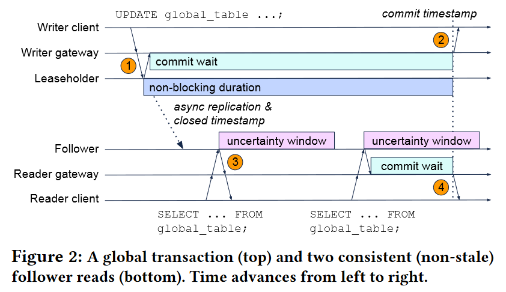

CRDB 在 SIGMOD 2022 上发表了一篇关于他们如何做 multi-region DB 的论文「Enabling the Next Generation of Multi-Region Applications with CockroachDB」，为这个题目交上了一份相对完整的答案。
Multi-Region 的需求来源于高可用和政策要求（例如 GDPR）。为此，CRDB 引入了一些基础概念：
- Region，地理上的区域
- Zone，Region 下面的可用区
- Table locality，是否为本地表，本地表指主要的访问都来自于一个 region 内
- Survivability goal，保持服务可用的情况下能够容忍的错误（zone failure or region failure）
这些概念都能够用 SQL 进行表达，并且能够与 DDL 语句无缝结合。同时 CRDB 也有针对不同条件的优化，例如本地表的全局唯一性检测不需要访问远程节点。
这篇文章主要做的工作是：
- 通过将上述三个概念结合到 SQL 中，极大简化 multi-region 的配置
- 优化器支持 geo-partition
- 只读事务的 serializability
- 单 key 事务的 strict serializability
抽象与 SQL
1 | cockroach start \ |
CRDB 在命令行之中指定 region 和 zone，最后整个集群的 region/zone 是所有 node region/zone 的总和，可以通过 SHOW REGIONS 查看。
1 | CREATE DATABASE movr PRIMARY REGION "us-east1" REGIONS "us-west1", "europe-west1"; |
CRDB 通过 SQL 执行 database 所属的 region
1 | ALTER DATABASE movr SURVIVE REGION FAILURE; |
通过指定可用性的目标，CRDB 能够更加灵活的调度副本，在可用性目标的容忍范围内，当遇到 region/zone failure 时候，写入请求最多增加一个离最近 region 的 RTT，读请求则不受影响。
1 | CREATE TABLE west_coast_users ( ... ) LOCALITY REGIONAL BY TABLE |
建表语句能够指定表的 locality，BY TABLE/ROW 的表会优化那一张表/行在指定 region 下的读写性能，GLOBAL 则会优化全局的读性能，牺牲写性能。
自动分区会 row 放在它被 insert 的分区中，自动迁移（ON UPDATE rehome_row()）会将 row 放到它最近被 update 的分区中，为了防止抖动，默认不打开自动分区。
对于那些已经支持分区的应用，他们或许不愿意在 insert 语句中额外指定分区，此时可以使用 REGIONAL BY ROW DDL 语句。
1 | crdb_region crdb_internal_region AS (CASE WHEN state = 'CA' |
对于 REGIONAL BY ROW 的表，可以将 crdb_region 定义为一个计算列，当条件中有 state 时，就会按照这个规则去做 local 查询。
Placement
CRDB 使用 zone configurations 来配置 placement，CRDB 在 v21.1 支持了 non-voting replicas，也叫 read-only replicas，因此就有了这么一堆看起来很繁琐的配置。
1 | // The difference between num_replicas and num_voters |
但是这些繁琐的配置相比于如 “我要求 region failure 时服务不中断” 的口头语还是来的更好用。上一节所说的 locality 配置（REGION BY TABLE/ROW ）就是通过 zone configurations 来实现的。
- Home region，主要发生读写的 region
- Zone survivability，在 zone failure 的 survivability 要求下，3 个 voting replicas 都会被分配在 home region 中（不同的 zone 里），non-home region 里会有 non-voting replicas 来加速读
- Region survivability，region survivability 需要容忍 region failure，因此要求至少有 3 个可用 region，在 home region 中有 2 个副本能够成为 candidates，因此 N region 的集群中会有 $𝑚𝑎𝑥 (2 + (𝑁 − 1), 𝑛𝑢𝑚_𝑣𝑜𝑡𝑒𝑟𝑠)$ 个副本
- Placement Restricted，最后，因为一些合规的要求（如 GDPR），有些数据不能够出 region，因此 zone survivability 的数据库能够加上 placement restricted 约束，这样所有的 replica 都会确保在 home reigon 内（但是和原本的 zone survivability 有何区别？）。Placement restricted 对 global table 没有效果，并且不能和 region survivability 同时配置
考虑 locality 的优化器
Unique Constraint
CRDB 的 REGIONAL BY ROW 表能够不使用显示的分区 column（也没有用隐藏列），为了保证全局的唯一性，CRDB 为每个 insert/update 语句并行的在每个分区做唯一性检测，这里有 corss-region latency，而为了尽可能降低这种请求带来的延迟，CRDB 在某些情况下会跳过唯一性检测（默认新数据也是唯一的）：
- UUID 列，因为碰撞率非常低，默认不检查
- 索引定义上有
crdb_region标记，如UNIQUE (crdb_region, col) - 将 crdb_region 定义为一个 unique column 的生成列，此时 partition 的唯一性能够推断 global 的唯一性
Locality Optimized Search (LOS)
当使用一个唯一索引作为查询条件时，至多能找到一条数据，CRDB 会先在本地查询数据是否存在，只有当本地不存在时，才去其他 partition 查找。将这个思路扩展，任何返回有限行的查询（例如 limit 和 where in）都能够优先做本地查找，再做远程查找。同理，在 join 中，根据左表查询右表的值时，也能够使用 LOS 优化。（个人意见，LOS 是一种乐观策略，应该在某些情况下有回退）
Stale Read
为了加速查询，CRDB 对读取时所使用的副本做了三个优化：
- Follower Read
- Non-voting replicas Read
- Stale Read
这些都是一些比较常见的优化，主要工作是确认 Raft log 的 committed index 是否复合读的要求，说起来比较复杂，这里不展开说了（懒）
Global Transaction
这篇论文中说它提出了 a novel global transaction protocol，指的就是这个 global transaction，所以重点来讲讲这部分。这个 global transaction protocol 是为上面提到的 global table 准备的，回顾一下 global table 的要求：
- 所有 region 都能够 local read
- 写入性能会受到影响
CRDB 采用的方案叫 “write into the future”，写入一条未来 timestamp 的数据，并且 commit 线程要等待本地的 HLC 时钟超过这个 future timestamp 才返回成功，在次之前都是 uncertainty window，但它只延迟返回事务成功，2PC 的 lock 会在第一时间被清理不会被推迟。
我们知道在使用 HLC 时，当读事务遇到 uncertainty window 时，需要重启事务用更新的 timestamp 来消除 uncertainty window 带来的破坏 linearizability 的风险（uncertainty refresh），图 step3 就需要做 uncertainty refresh。上面提到了，future write 返回成功的条件是 local HLC > future timestamp，所以可能存在有的节点的 HLC 仍然小于 future timestamp 的情况，那么仅仅靠 uncertainty refresh 机制，就可能产生“提前读到”的问题。假如 w 是一个 future write 事务，r 读到了 w 的写入，随后的 r’ 没有读到 w 的写入。在真实时间上，发生的顺序是 r → r’，但是从读取的结果来看则是 r’ → w → r，这就违背了 linearizability。这里会让人困惑，都有 uncertainty refresh 机制的保证了，为什么还会提前读到呢？因为 uncertain window 是 HLC 的物理时间偏差的上限，但是 future timestamp 并不是取自 HLC 时间的，假设下面这种情况（uncertain window 取 250ms）：
- HLC(w) = 1000ms
- HLC(r) = 1100ms
- HLIC(r’) = 900ms
- future timestamp = 1200ms
当 HLC(r) 进行读取时，它的 uncertain window 是 [1100ms, 1350ms]，当遇到 future timestamp 时，它会重启并且将 uncertain window 更新为 [1201ms, 1350ms]，再次读取时即可读到这条 future write。但是，future timestamp 落在了 HLC(r’) 的 uncertain window 之外，因此 r’ 没有机会发现在自己的uncertainty window 里有一条数据，也没有机会做 uncertainty refresh。这里的关键点在于根据 future timestamp 来推 ts 是不安全的。

解决这个问题也很简单，当读事务发现在自身 uncertain window 之外的 future timestamp 时（图中 step3，如上述 r’），可以忽略这条 future write；但是当读事务发现在自身的 uncertain window 之内的 future timestamp 时（图中 step4，如上述 r），则需要等待本地的 HLC 超过 future timestmap 时在进行读取，此时即可保证 r’ 的 HLC 的 uncertain window 至少能够发现这条 future write，防止 linearizability 被破坏。
Local Read
Global transaction 的一个要求是所有的 region 都能够进行 local read，那么这里就需要考虑副本读的兼容性，由于 Raft 的顺序性约束，副本读只需要保证 closed timestamp 被正常推进，就能够不漏读。因此关键点不在于给 future write 设置多长的 commit wait（当出现系统抖动时，wait 总有低于网络延迟的时候），而在于副本读需要从 write quorum 处获取到最新的 closed timestamp。
个人评价
这篇论文从工程学术两方面手把手的教人做 global database，看完之后感叹他们的格局真是大啊。俗话说“一流企业做标准”，如果盯着 MySQL 源码去魔改，大概这辈子也走不到这一步吧。